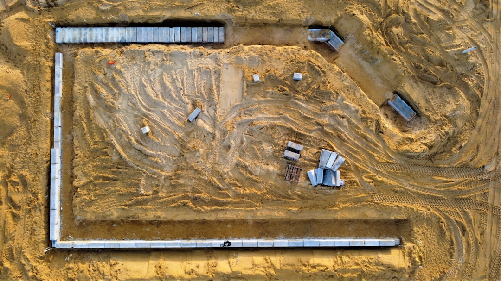

For Perth owners, the core checks are wall height, boundary effect, drainage, material and engineering. The source page says a building permit is generally needed once a wall retains more than 0.5 metres of ground, and engineered work is described as designed to AS 4678 by a WA registered building engineering practitioner. The main local material choices named are limestone block and post and panel precast concrete, with timber, rock, boulder and besser block for more specific jobs.
For homeowners comparing retaining walls perth options, the useful starting point is soil, wall height, drainage, boundary position and whether engineering or a permit is likely.
Retaining Walls Perth Explained
Retaining Wall Perth frames the local decision around two systems seen often in Perth, limestone block and post and panel precast concrete. That gives owners a practical order of questions: what the wall must hold, how water moves behind it, and whether the position creates an approval issue.
The source page points to sandy Swan Coastal Plain blocks, limestone backed geology and different conditions in the Darling Range hills. A garden terrace, sloping driveway, boundary wall and wall carrying extra load should not be briefed the same way. Before comparing materials, note the retained height, length, access, nearby fences, what sits above the retained ground and any visible water issues.
For damaged walls, begin with condition rather than a preferred replacement material. Leaning, bulging and cracked sections need assessment of drainage, footing condition and material state before a quote can separate repair, partial rebuild and full replacement.
Choose the wall type by job
Limestone block is described as a fit for Perth streetscapes and sandy Swan Coastal Plain blocks. It suits owners considering a substantial masonry appearance and a material already common in local landscaping. Post and panel, also described as twin side retaining, uses posts with precast concrete panels slotted between them and is described as a fast, consistent finish system for boundary and driveway retaining.
Other options become relevant when the site brief changes. Timber sleeper walls are named for gardens, terraces and low boundary retaining. Rock and boulder walls are linked to Perth hills blocks and granite outcropped sites. Besser block is identified for taller retaining, rendered finishes and engineered structural walls.
- Limestone questions: ask about footing preparation, drainage and how the finish will sit with the existing block.
- Post and panel questions: ask whether posts, panels, excavation and installation are all in the scope.
- Engineered wall questions: ask who arranges design documentation and permit support.
A separate guide to retaining wall planning in Perth looks at similar owner decisions from another editorial angle.
Check drainage and approval early
The source page treats drainage as a structural detail behind the wall. It names ag drain, gravel and geofabric as part of retaining wall drainage and subsoil systems, and links those details to failures in Perth's winter saturated sandy ground. A quote should state what drainage is included and where water is intended to discharge.
Approval should be checked before work is scoped too tightly. The source page says a building permit from the local government is generally needed once a wall retains more than 0.5 metres of ground. It also says a wall of any height can need approval if it is tied to other building work, affects or protects adjoining land, or affects a boundary wall or dividing fence.
For engineered work, the source page refers to AS 4678 and a WA registered building engineering practitioner. Ask whether the price is for construction only, or whether it includes engineering documentation, footing details, drainage design and help with council paperwork.
Who this applies to
This guide is for Perth homeowners, renovators and property managers comparing wall materials, repairs or replacement where wall type and approval risk are still undecided. It is also useful before sending an enquiry, because a clearer brief helps a contractor understand site access, wall height, boundaries and damage.
It applies when the project involves sandy ground, a sloping driveway, a boundary, garden terracing, a failing wall or uncertainty about council approval. If an engineer, designer or local government has already issued drawings or conditions, those documents should lead the specification.
For taller engineered retaining, use the same questions but expect a more formal documentation path. The decision should move from preferred finish to design basis, surcharge, drainage, access and approval responsibility.
Quote checks before committing
A useful quote should do more than name a material. It should explain what is being removed, what is being retained, what drainage is included, whether engineering is required and who deals with local government permit steps. For a damaged wall, it should also state whether the proposed work is repair, partial replacement or full replacement.
Prepare a short brief before requesting prices:
- Wall location, approximate retained height and length.
- Whether the wall is on or near a boundary or dividing fence.
- What sits above the retained ground, such as a driveway, garden or structure.
- Preferred material, if known, such as limestone, post and panel, timber, rock, boulder or besser block.
- Visible leaning, cracking, bulging or drainage problems.
Compare quotes by scope, not total alone. Check that each price uses the same assumptions for drainage, removals, access, engineering and approvals.
- Describe the site. Record the wall location, retained height, length, access and whether it touches a boundary or fence.
- Shortlist materials. Compare limestone, post and panel, timber, rock, boulder or besser block against the site conditions and finish wanted.
- Check approval triggers. Ask the local government or contractor whether the 0.5 metre threshold, boundary conditions or adjoining land issues affect the job.
- Confirm engineering. For taller or loaded walls, ask whether a WA registered building engineering practitioner and AS 4678 design are needed.
- Compare scope. Check drainage, removals, permit support and repair assumptions before comparing quote totals.
| Option | Best fit situation | Quote question |
|---|---|---|
| Limestone block | Perth homes seeking a local masonry look on suitable ground | Is drainage and footing preparation included? |
| Post and panel | Boundaries, driveways and consistent precast finishes | Are posts, panels and installation all included? |
| Besser block | Taller or rendered engineered walls | Is design to AS 4678 required? |
| Timber sleeper | Garden scale terracing or low boundary retaining | What timber and drainage detail are specified? |
| Rock or boulder | Hills blocks or natural stone landscapes | How is the wall battered and drained? |
Common questions
Do Perth retaining walls always need council approval? No. The source page says a building permit is generally needed once a wall retains more than 0.5 metres of ground. It also says some walls below that height may still need approval if they affect building work, adjoining land, a boundary wall or a dividing fence.
Which material choices does the source page focus on? It focuses on limestone block and post and panel precast concrete as the two main local systems. It also discusses timber sleeper, rock and boulder, and besser block for more specific site conditions.
What should I ask about drainage? Ask whether the quoted wall includes ag drain, gravel and geofabric, and where water is intended to go. The source page treats drainage as part of the wall's structural performance.
When does engineering enter the discussion? Engineering is most relevant where height, boundary position, surcharge or structural loading make the wall more complex. The source page refers to AS 4678 and WA registered building engineering practitioners for engineered walls.
This guide covers Perth wall material choice, quote preparation, drainage, repair assessment and permit questions for retaining projects.